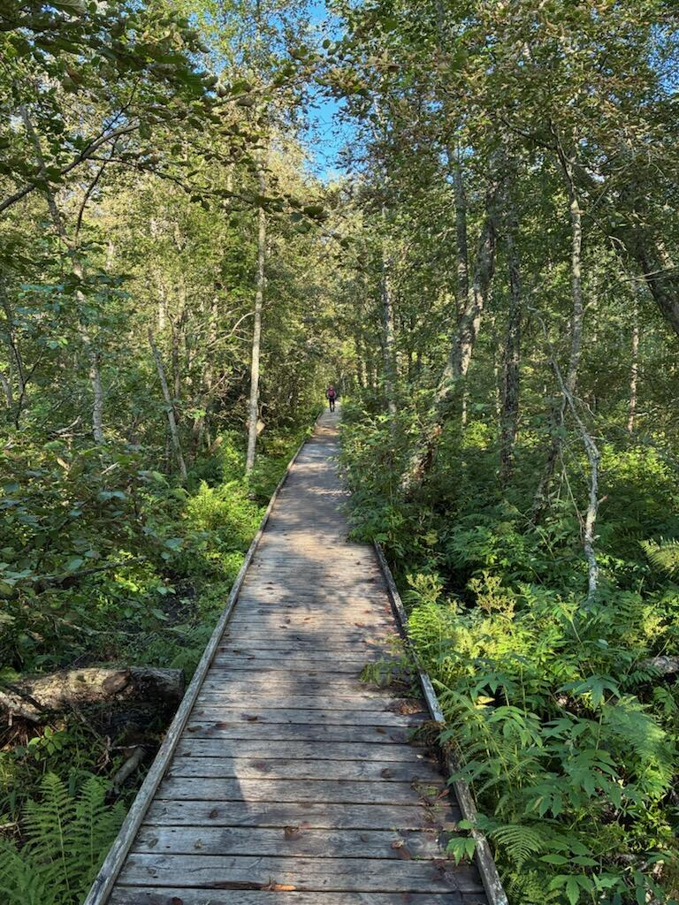
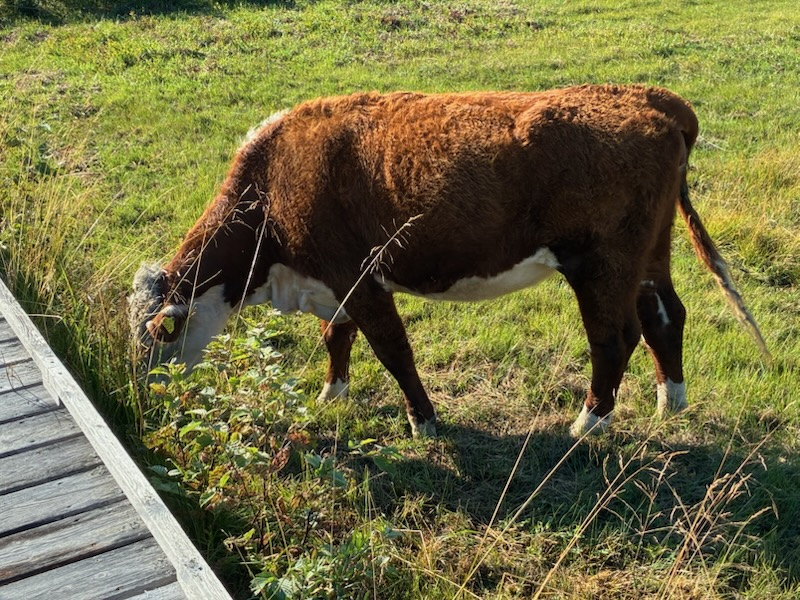
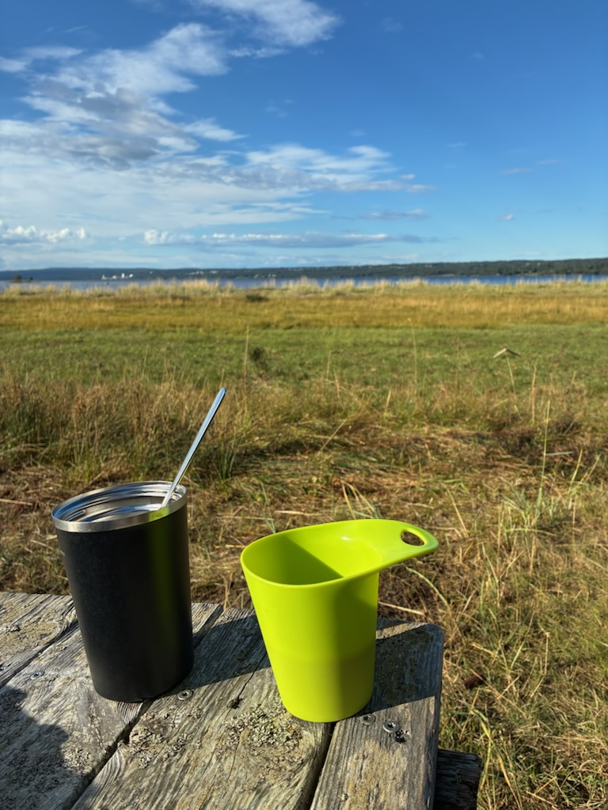
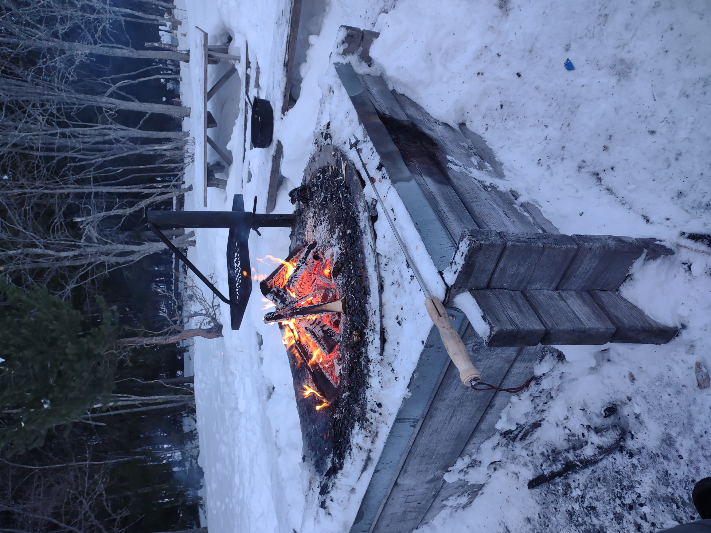
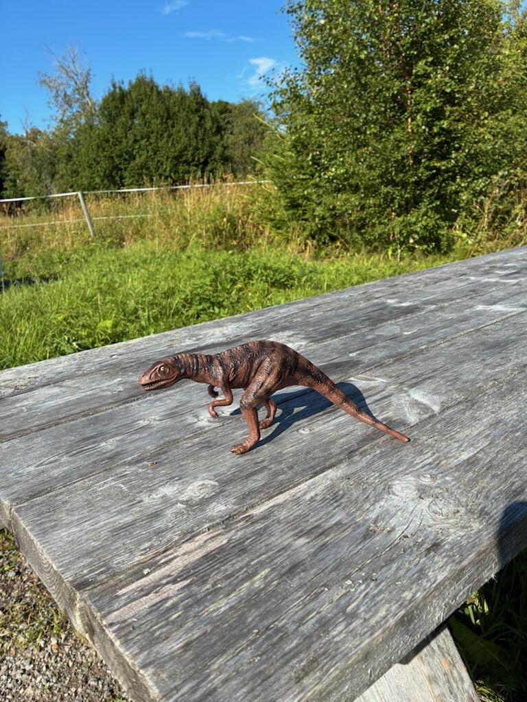
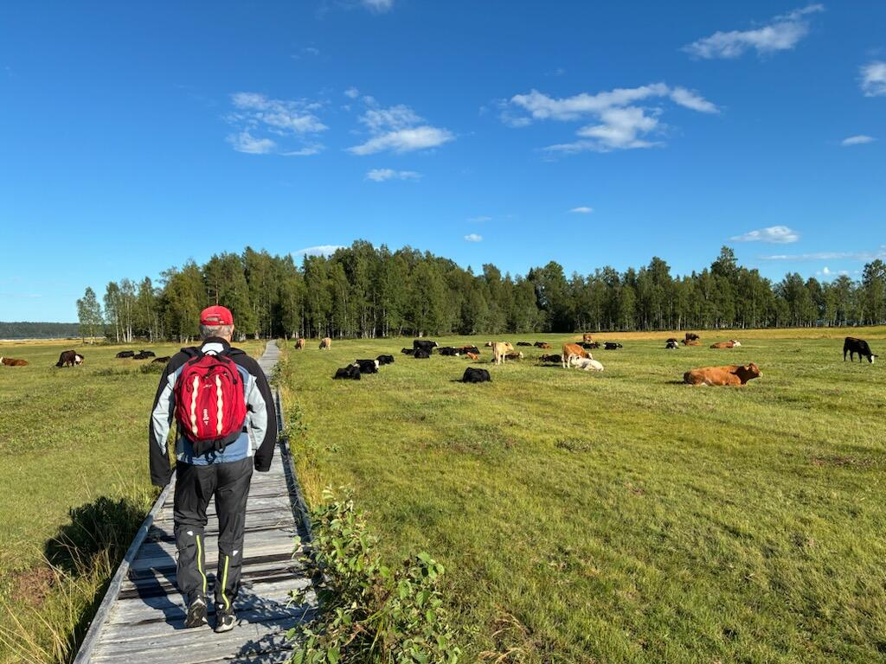
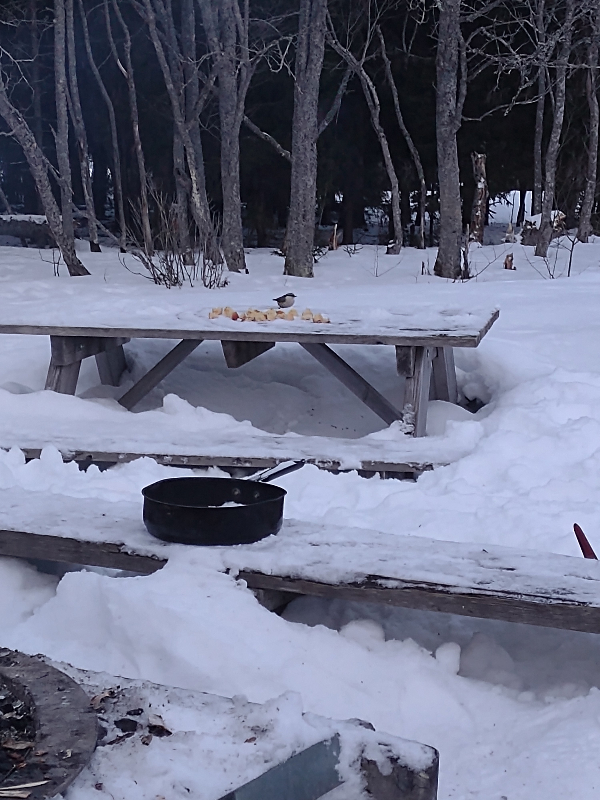
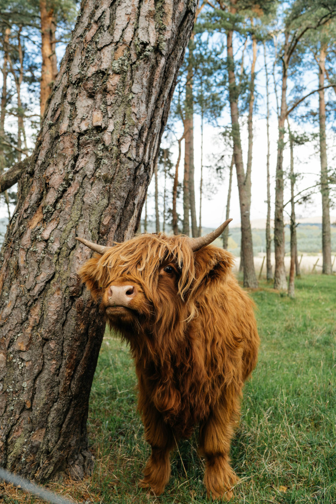

Ett intensivt arbete har pågått med att röja efter vinterns storm. Nu har skadade träd kapats och forslats bort. Korna har äntligen fått komma ut på bete i naturreservatet. Korna hjälper till att hålla barkerna öppna och jorden gödslad. Samtidigt får de välbehövligt ombyte från vinterns lagårdstillvaro. Korna är lugna och vänliga och utgör sällan någon fara för besökare.
Välkommen till
Stornäsets naturreservat







Nu är korna på bete
